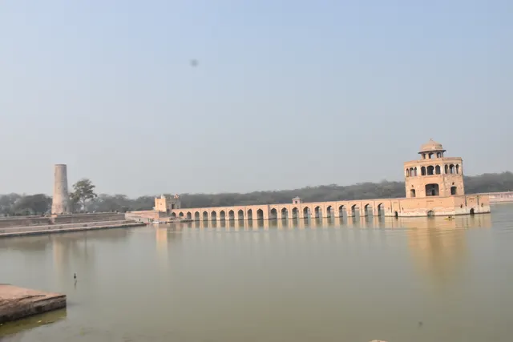

Historic Monument · Sheikhupura
Hiran Minar
UNESCO Tentative List · Not inscribed on the World Heritage List
Sheikhupura · Punjab
A tapering brick tower faces a large water tank and island pavilion, bringing Mughal commemoration and landscape engineering together.

Place & context
A closer look
- Heritage category
- Historic Monument
- Designation
- UNESCO Tentative List · Not inscribed on the World Heritage List
- Province / Region
- Punjab
- District
- Sheikhupura
- Legal status
- Not Protected
As recorded in the cited DOAM catalogue; not an independent review of current legislation.